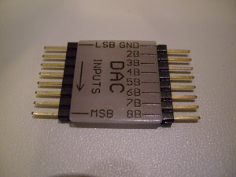
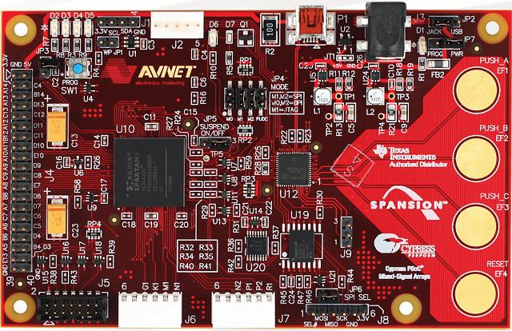
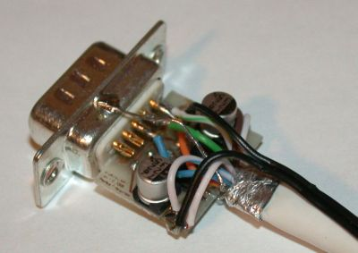
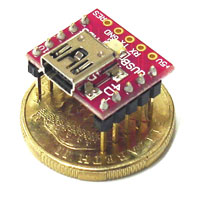
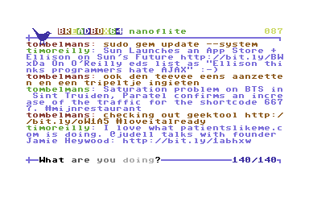
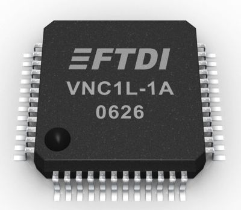

A weblog focused on interesting circuits, ideas, schematics and other information about microelectronics and microcontrollers.
E-books
Disclaimer
Because I have not tested all electronic circuits mentioned on this pages, I cannot attest to their accuracy; therefore, I do not provide a warranty of any kind and cannot be held responsible in any manner.
Other
Simple R-2R DAC for your project
25. August 2009 - 19:05 — adminDo you need some simple digital-to-analog converter? The best way is to use a kind of R-2R circuit (also called "resistor ladder"). Here is a R-2R DAC module for your devices.

FPGA: The first contact
7. August 2009 - 21:15 — adminIs there a cheap and powerful kit for an experiments with FPGAs? Yes, here it is!

Welcome back...
12. July 2009 - 18:15 — adminI've moved this site to new hosting (I choose Hostmonster). I've also updated the CMS from version 5 to version 6. I apologize for any inconvenience.
VGA to SCART RGB converter
11. July 2009 - 12:43 — adminA simple circuit to connect your VGA graphics card to your TV.

microUSB
23. June 2009 - 17:44 — adminA smart and small solution to connecting your devices with PC via USB.

Twitter client for Commodore C64/128
16. June 2009 - 15:28 — adminBREADBOX64 is a twitter client for the C64/128. It uses Contiki and the MMC Replay cartridge with the RR-Net add on for the physical connection to the net.

Blog @ Twitter
24. May 2009 - 18:00 — adminDo you use Twitter? If so, follow me. I'd like to use Twitter for quick linking to interesting pages I find.
USB Host Controller Device
7. March 2009 - 20:53 — adminVinculum is the brand name for the new family of USB Host Controller ICs devices from FTDI.

"Error 500" on this site
27. February 2009 - 15:32 — adminThere was a problem with this site in the last 20 hours. The problem was in the site software update and it's fixed now. I apologize for any inconvenience...
How to use a stepper-motor from old disk drives
21. February 2009 - 13:51 — adminWhy and how to use components from old disk drives?